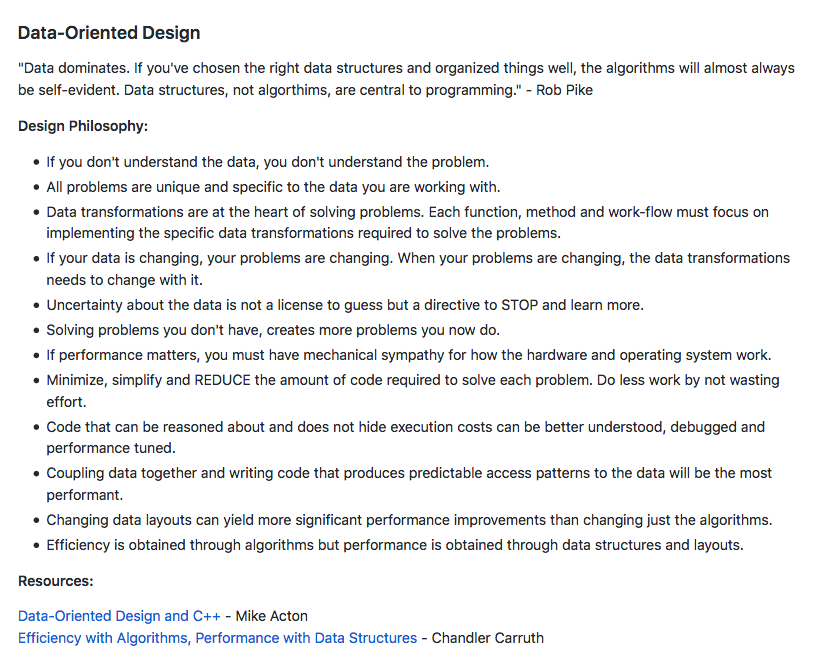
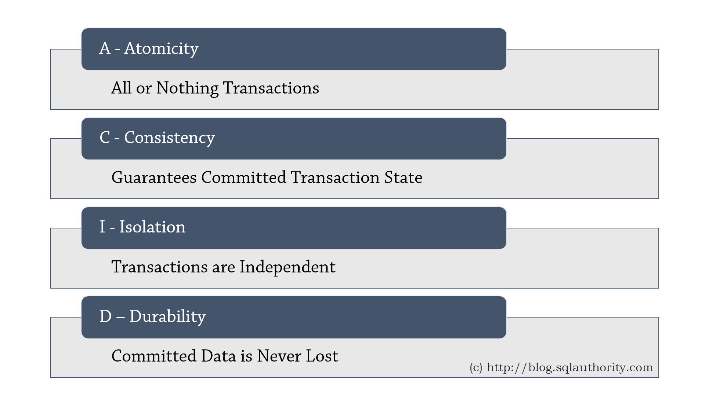
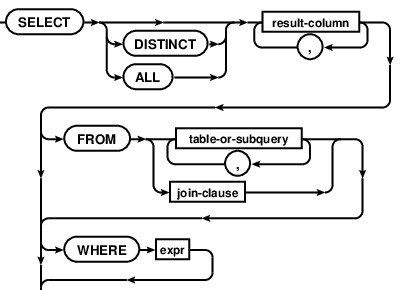
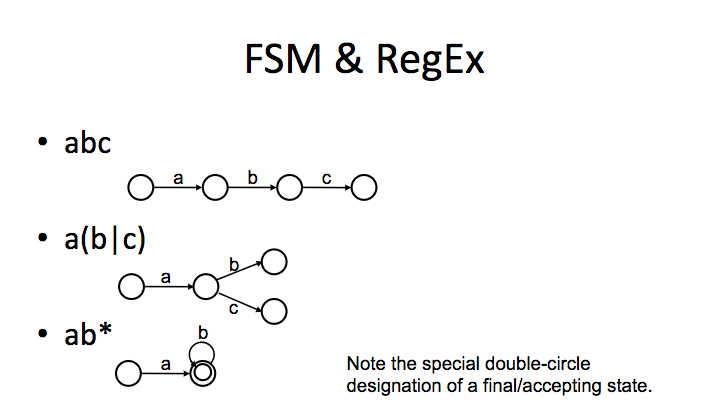
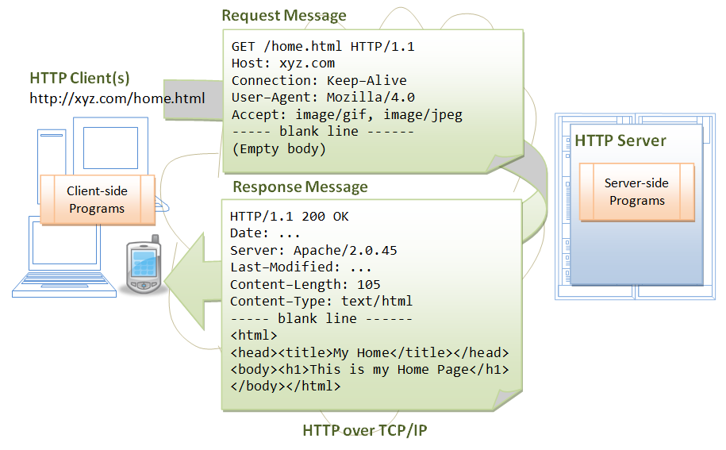
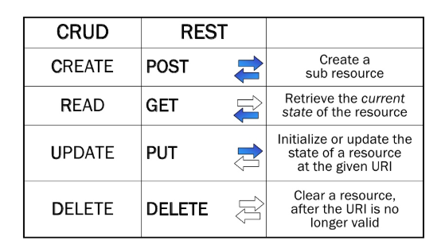
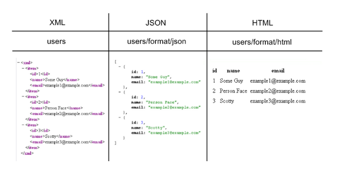

Data - Storage/Retrieval, Owenership/Valuation and Privacy/Surveillance
Data has been called the new oil. In one generation, oil, gas and auto companies have been displaced by Silicon Valley companies as the America's most valuable corporations. Two new developments also make the surveillance state possible: this new mass collection of data, and its storage, retrieval and analysis thanks to large and cheap databases. What happens to society when governments employ either public or secret domestic surveillance programs?
We start with an exploration of the practical concerns of collecting, storing and organizing data in databases. To this end, we'll be looking at a family of related technologies that underlie most of the computational infrastructure today: Databases, SQL, RegEx, and REST APIs. We'll see how technologies like these offer a broad range of practical solutions to how we manage the explosive growth of data.
- The Value of Data and Databases: (MT = Monday/Tuesday)
- No Flipped Lecture Video this week, but please complete the programming assignments below before class. This week will be a largely hands-on exercise with SQL, RegEx and REST API (time permitting), and it will be hard to keep up without preparation.
- Sign-up for a Twitter Developer Account (4:30-8:30)
- Data is the Oil of the Digital World. What if Tech Giants had to Buy it from Us? Agnes Budzyn, World Economic Forum, Apr 2019
- Putting a Value on Data, Nick Rhea and Adam Sutton, PwC 2019
- SQL Tutorial | Relational Database and Key Terms Explained, O'Reilly (8:11) May 2014
- Introduction to SQL, DataCamp (Note the similarity with Pandas)
- Unit 1: Selecting Columns
- Unit 2: Filtering Rows
- Searching and Sharing Data: (TW = Tuesday/Wednesday)
- RegexOne Lesson 1-X (email Lesson X Graduation Page as proof)
- What is an API?, Uncubed (3:11) Apr 2017 (Sharing/Accessing Databases via the Web/Networks)
- Privacy vs Security: (RF = Thursday/Friday)
- State of Surveillance with Edward Snowden and Shane Smith,(26:00) VICE, Jun 2016
- The Dangers of Surveillance, (Just a brief intro to the legal and ethical issues/ramifications of data privacy) Neil M. Richards, Harvard Law Review, May 2013
- Why Privacy is Important and "having nothing to hide" is Irrelevant, Robin Doherty, Jan 2016
- Surveillance Valley: The Secret Military History of the Internet, Yasha Levine, 2018
In Class Tutorial:
Quiz:
- Database Quiz (Open Thur 6pm EST to Fri 6pm EST)






